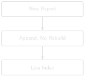

# code/chapter_13/ingest.py
import json
from pathlib import Path
def load_state(index_path, meta_path):
if index_path.exists() and meta_path.exists():
return load_index(index_path), json.loads(meta_path.read_text())
return None, []13 Daily Ingestion: Keeping the System Live

Progress █████████████ 13 / 13 · Estimated time: 45–60 min · Difficulty: 🔴 Advanced
13.1 Learning objectives
By the end of this chapter, you will be able to:
- Explain why a Daily Drilling Report system’s real operating mode is incremental, not batch — and what breaks if you rebuild from scratch every night.
- Ingest a single new report into a live, persisted index by appending to it, without re-embedding everything that came before.
- Explain why the dense index appends cleanly but the BM25 signal does not, and make sure a report never gets added to the index twice.
13.2 Operational Problem
Sean, the production engineer, asks the question every previous chapter quietly assumed away: “Report #77 lands tomorrow morning, and I need to ask about it on the call. Do we rebuild the whole index every night just to add one page?”
Everything so far has been batch: point the pipeline at a fixed folder of reports, extract, chunk, embed, and index all of them in one pass. That is exactly right for learning, and fine for a frozen archive. But these are Daily Drilling Reports. In a real deployment the archive is never frozen — one new report arrives every day, sometimes several, and the system has to absorb each one and be ready to answer questions about it within minutes. Rebuilding the entire index from scratch to add a single report works at ten documents and is absurd at ten thousand. The job of this chapter is to add one report to a live system the way the field actually does it: incrementally.
13.3 Example: a new report arrives
NoteIngesting one report into a live index
Live index before: 296 chunks across 9 reports
New report arrives: FORGE-16A-78-32_Drilling_050_2020-12-08.pdf
extract -> quality gate -> chunk -> embed -> append
Live index after: 333 chunks across 10 reports (+37, no rebuild)That final number is not a coincidence. 333 chunks is exactly what Chapter 8’s one-shot build produces over all ten reports. Incremental ingestion and a full rebuild converge on the identical index — appending just gets there one report at a time, without re-embedding the nine that were already there.
13.4 Theory
Two facts about the index you built in Chapter 8 make incremental ingestion possible — and one makes half of it harder than it looks.
The dense index is append-only, and that’s a feature. FAISS’s IndexFlatIP stores one row per chunk, and index.add(new_vectors) bolts new rows onto the end. Because Chapter 4’s embeddings are normalized and each chunk’s vector is computed independently of every other, the vectors you add today are identical to the vectors a full rebuild would produce for the same chunks. Order doesn’t matter; nothing already in the index needs to change. Appending is exact.
TipEngineering Translation: Append-only index
An append-only index is a bound logbook, not a whiteboard: you add tomorrow’s entry to the next blank line without rewriting yesterday’s. That makes adding cheap and safe — but it also means you can’t quietly erase a line, which is why getting each entry right before you write it matters (more on that below).
BM25 is not append-only, and pretending otherwise is a bug. Chapter 9’s sparse signal scores a term by its rarity across the whole archive (inverse document frequency) and normalizes for average document length. Both of those depend on every report. Add one report and every term’s IDF shifts a little and the average length moves — so the correct BM25 score for a document you indexed last week is now slightly different. You can’t append to BM25; you recompute its whole-archive statistics. That’s cheap at this book’s scale and a real cost at millions of documents, and it’s the honest asymmetry at the heart of incremental retrieval: the dense signal appends, the sparse signal recomputes.
An append-only index has to catch duplicates at the door. Because you can’t easily un-add a row, the moment to stop a report being indexed twice is before you add it — not after. This archive already makes the point: its raw form has duplicate filename variants of the same report (Chapter 8’s build_full_archive.py deduplicates them). Ingest report #38 twice and it contributes its chunks twice, silently inflating how much “evidence” a query appears to have. So ingestion checks first: is this report already in the index? If so, skip it.
Here’s the daily loop, end to end — every box is a tool you already built:
a new report PDF arrives
│
extract text (Ch 1) ──► quality gate (Ch 6) ──► reject → review queue
│ │ pass
│ already added? (skip duplicates) ──► yes → skip
│ │ no
page-aware chunk (Ch 7) ──► embed (Ch 4) ──► index.add() (Ch 8)
│
re-run the gap check (Ch 10) ──► "no report filed yesterday?"13.5 Implementation
The whole pipeline is orchestration over code you’ve already written and tested. It lives in code/chapter_13/ingest.py.
13.5.1 Step 1: load the live index, or start one
What problem are we solving?
An incremental system has state: the index and its per-chunk metadata persist between runs, because the whole point is not to rebuild them. Loading yesterday’s index is the first thing every ingestion run does.
Inputs
- A saved FAISS index file, and a JSON file holding the parallel list of
{report, page, date}metadata records (Chapter 8’s structure).
Expected Output
The loaded index and metadata list — or empty state (None, []) on the very first run.
What just happened?
Nothing clever — the index and its metadata are read back from disk exactly as Chapter 8 saved them. The metadata list is what lets a bare FAISS row number turn back into a report and page for a citation; it has to travel with the index, so it’s persisted alongside it.
13.5.2 Step 2: ingest one report — and never the same one twice
What problem are we solving?
Take one new report PDF and fold it into the live index — running it through the same extraction, quality gate, and chunker the batch pipeline used — then append its vectors instead of rebuilding. And do it safely: skip a report already indexed, and never index text the quality gate rejects.
Inputs
- A report PDF, the embedding model, the current index, and the metadata list.
Expected Output
The updated index, the number of chunks added (0 if skipped or rejected), and a status string.
import faiss
def ingest_report(pdf_path, model, index, metadata):
report = pdf_path.name
if any(m["report"] == report for m in metadata): # skip if already added
return index, 0, "skipped (already ingested)"
text = extract_text(pdf_path) # Chapter 1
gate = evaluate_ocr_quality(text) # Chapter 6
if gate["reject_ocr"]:
return index, 0, f"rejected by quality gate: {gate['flags']}"
pairs = chunk_pages_by_tokens(text, 60, 15) # Chapter 7
vectors = embed_texts(model, [c for _p, c in pairs]).astype("float32") # Chapter 4
if index is None:
index = faiss.IndexFlatIP(vectors.shape[1])
index.add(vectors) # <- append, not rebuild
date = report_date(report) # Chapter 8
for page, _chunk in pairs:
metadata.append({"report": report, "page": page, "date": date})
return index, len(pairs), "ingested"What just happened?
Read top to bottom, this is the daily loop in one function. The duplicate check comes first, because an append-only index can’t take it back afterwards. The quality gate runs before anything gets indexed, so bad OCR is routed to review instead of silently polluting the index. Then the real work — chunk, embed, index.add() — is exactly Chapter 8’s build, applied to one report instead of the whole folder, and the parallel metadata records are appended in the same order the vectors were, so metadata[i] still describes row i.
13.5.3 Step 3: re-check the archive for gaps
What problem are we solving?
A live archive can grow a hole — a day with no report filed. Chapter 10 built the detector; ingestion is what makes it continuous, re-running it every time the archive changes instead of once at setup.
Inputs
- The distinct report dates now in the index.
Expected Output
The current list of reporting gaps — ideally empty.
def ingested_dates(metadata):
return sorted({m["date"] for m in metadata if m.get("date")})
# after ingesting today's reports:
gaps = find_date_gaps(ingested_dates(metadata)) # Chapter 10What just happened?
The same gap detector from Chapter 10, now pointed at the live set of dates. Run once at setup, it tells you about holes in the historical archive; run after every ingestion, it tells you the morning a report didn’t arrive — which, for a daily-reporting well, is exactly the silence worth surfacing before someone assumes nothing happened.
13.6 Production Reality
This chapter ingests one report on demand from the command line. A deployed system has to decide the rest:
- What triggers ingestion? A nightly
cronjob that sweeps a drop folder is the simplest; an event (a file landing in cloud storage) is more responsive. Either way, ingestion has to be something that runs on its own, not a script someone remembers to invoke. - Reports don’t always arrive in order. A scanned backfill or a corrected re-file can show up after later reports are already indexed. Appending still works — the index doesn’t care about order — but your gap check and any date-range logic must handle a report that fills a hole after the fact.
- Re-embedding is a whole-archive event. The day you switch embedding models (Chapter 4’s warning), old and new vectors aren’t comparable, so the append-only shortcut doesn’t apply — you rebuild everything once, together. Incremental ingestion buys you every day except that one.
- Provenance matters more as the archive grows. Which model version embedded each chunk, when it was ingested, and from which source file — that metadata is cheap to record at ingestion and expensive to reconstruct later.
- BM25 recomputation is scheduled, not skipped. The dense index appends per report; the sparse statistics are recomputed on a cadence (say, nightly) that trades a little staleness for not rebuilding on every single arrival.
13.7 Practical exercise
🟠 Intermediate
Try it yourself: Build the live index from nine of the ten sample reports (leave out FORGE-16A-78-32_Drilling_050_2020-12-08.pdf), note the chunk count, then ingest report #50 and confirm two things: the index grew by report #50’s chunks without rebuilding, and a query like "fishing milled up lost pieces of bit" now retrieves report #50.
You’ll know it worked when: the index goes from 296 to 333 chunks, report #50 appears in the top results for that query, and ingesting it a second time reports skipped (already ingested) with the count unchanged.
13.8 Field notes
Warning🔧 Field notes: incremental converges on the identical batch index
Action: build the index from the first nine sample reports, then ingest the tenth, and compare the result to Chapter 8’s one-shot build over all ten.
Result: nine reports give 296 chunks; ingesting report #50 adds 37, for 333 — the exact total Chapter 8’s build_chunk_metadata_index produces in a single batch pass over all ten reports.
Why: each chunk’s embedding is computed independently and the vectors are normalized, so the row you append today is bit-for-bit the row a rebuild would have produced. IndexFlatIP is an exact index; append and rebuild are two paths to the same place.
Lesson: incremental ingestion isn’t an approximation of the batch system to be traded off against accuracy — for an exact flat index it produces the same index, one report at a time. That’s what makes it safe to run every day instead of rebuilding every night.
Warning🔧 Field notes: the dense signal appends, the sparse signal recomputes
Action: think about what has to change in the index when one report arrives — for the dense (FAISS) signal, and for the BM25 sparse signal from Chapter 9.
Result: the dense side needs one index.add() — nothing already stored changes. The BM25 side has no equivalent: adding a report shifts every term’s inverse document frequency and the archive’s average document length, so the correct score for a report indexed last week is now different. There’s nothing to append to; the statistics are recomputed.
Why: a dense embedding is a property of a chunk alone. A BM25 score is a property of a chunk relative to the whole archive. Anything defined relative to the whole archive moves when the archive moves.
Lesson: “incremental” isn’t one property of a retrieval system — it’s per-signal. The most useful thing you can know before you deploy is which parts of your index append and which parts recompute, because that decides what you can do per-arrival and what you have to schedule.
13.9 Challenge exercise
🔴 Advanced
Challenge: Handle a corrected re-file. A report is re-issued under a new filename with the same date and report number but revised text. A simple duplicate check on the filename alone would treat it as new and index it alongside the stale version, so a query could retrieve both. Extend ingest_report to detect that a report with the same (report number, date) is already indexed and refuse — or, harder, to supersede it. Note what the append-only index makes hard about replacing a report’s chunks, and how you’d work around it (hint: a “tombstone” flag in the metadata, or a periodic compaction rebuild). A reference solution is in code/chapter_13/challenge/.
13.10 Key takeaways
- A Daily Drilling Report system’s real operating mode is incremental: one report arrives, gets folded in, and is queryable within minutes — rebuilding the whole index per arrival doesn’t scale past a toy archive.
- An exact flat index is append-only, and appending converges on the same index a full rebuild produces — incremental is not a lossy shortcut here.
- Not every signal appends. The dense index does; BM25’s whole-archive statistics are recomputed. Know which is which before you deploy.
- An append-only index must catch duplicates at ingestion, because it can’t cleanly remove a row after the fact.
- The gap detector from Chapter 10 earns its keep by running continuously, turning “a hole in the historical archive” into “no report filed this morning.”
13.11 Repository files
| File | Purpose |
|---|---|
code/chapter_13/ingest.py |
Incremental single-report ingestion: extract → gate → chunk → embed → append, plus the gap re-check |
DDR_UTAH_FORGE/scripts/build_index.py |
The companion pipeline’s per-document build, run at scale as reports arrive (companion repo) |
CautionCHECKPOINT — Chapter 13
Tip✓ WHAT YOU BUILT
ingest.py — a daily ingestion loop: hand it one new report PDF and it extracts, quality-gates, chunks, embeds, and appends it to a live, persisted index, then re-checks the archive for gaps — turning the one-shot system from Chapters 1–12 into one that stays live as the well keeps reporting.
13.12 What can you do now that you couldn’t do before?
You can keep the system current without rebuilding it: as each new Daily Drilling Report arrives, fold it into the live index in seconds, know that the result is identical to a full rebuild, and be told the moment a report doesn’t arrive — the difference between a system you build once and a system you can actually run.
13.13 The complete, living system
Thirteen chapters ago, this was a single PDF and a five-line function. Now it reads an archive, gates bad scans, chunks and embeds what’s left, retrieves by meaning and by exact term, answers with citations you can check, evaluates itself honestly — and keeps all of that current as new reports arrive, one day at a time. Every stage exists because a simpler version failed at something real: a scanned page with no text, a chunk that split a sentence, a query that missed the right report, a hallucinated number, an index that went stale the morning after it was built.
13.14 Where to go from here
You’ve built, chapter by chapter, a working RAG system grounded entirely in real, public Daily Drilling Reports — from extracting one PDF through keeping a live index current as the well keeps reporting. Appendix A shows how to set up the full companion pipeline and point it at your own archive, whether that’s more Utah FORGE data as it becomes available, or a different well entirely.